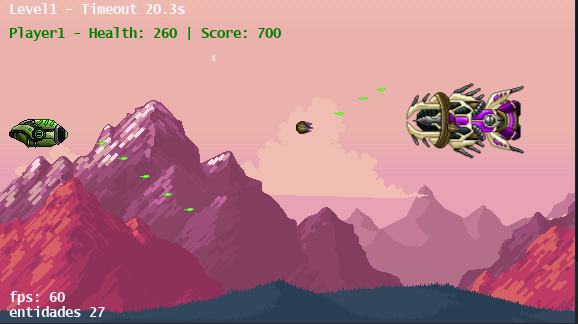
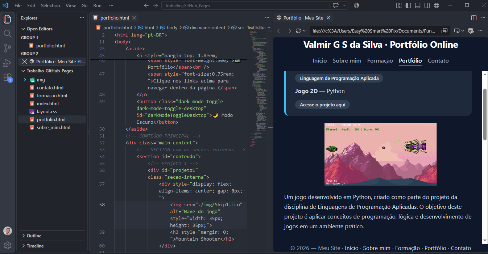

Mountain Shooter

Um jogo desenvolvido em Python, criado como parte do projeto da disciplina de Linguagens de Programação Aplicadas. O objetivo deste projeto é aplicar conceitos de programação, lógica e desenvolvimento de jogos em um ambiente prático.
Primeira Página Web
Trabalho referente a disciplina Fundamentos da Programação Web — HTML/CSS/JavaScript
Acesse o projeto aqui
O obejtivo da proposta do trabalho foi desenvolver um portfólio online pessoal, aplicando os conceitos de HTML5, CSS3 (sem frameworks) e JavaScript. O projeto são estas páginas e os arquivos estão em um repositório no GitHub e pode ser acessado através do link contido no card acima.
Automação de Corte de Chapas
Automação de uma máquina de corte de chapas de granito e mármore — Linguagem LADDER
Projeto desenvolvido em parceria com o engenheiro elétrico Nilson Nunes, formado pela Universidade UNINTER. O objetivo é automatizar uma máquina de cortes retos por meio da implementação de um sistema supervisório, promovendo maior eficiência produtiva e aprimorando a segurança operacional. Essa iniciativa reforça o compromisso com a inovação e a integridade física dos operadores e do equipamento. Atualmente, o projeto encontra-se em fase de produção.